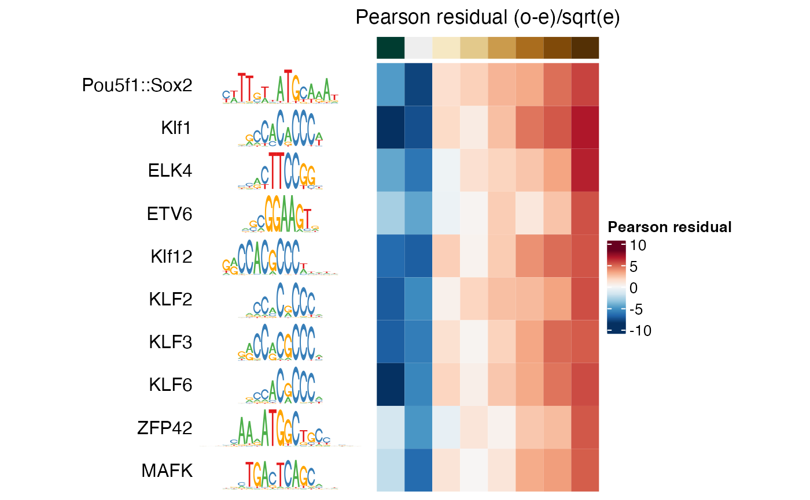

plotMotifHeatmaps.RdPlot motif enrichments (e.g. significance or magnitude) as a heatmap.
plotMotifHeatmaps(
x,
which.plots = c("negLog10P", "pearsonResid", "negLog10Padj", "log2enr"),
width = 4,
col.enr = c("#053061", "#2166AC", "#4393C3", "#92C5DE", "#D1E5F0", "#F7F7F7",
"#FDDBC7", "#F4A582", "#D6604D", "#B2182B", "#67001F"),
col.sig = c("#F0F0F0", "#D9D9D9", "#BDBDBD", "#969696", "#737373", "#525252",
"#252525", "#000000"),
col.gc = c("#F7FCF5", "#E5F5E0", "#C7E9C0", "#A1D99B", "#74C476", "#41AB5D",
"#238B45", "#006D2C", "#00441B"),
maxEnr = NULL,
maxSig = NULL,
highlight = NULL,
cluster = FALSE,
show_dendrogram = FALSE,
show_motif_GC = FALSE,
show_seqlogo = FALSE,
width.seqlogo = 1.5,
use_raster = FALSE,
na_col = "white",
...
)| x | A |
|---|---|
| which.plots | Selects which heatmaps to plot (one or several from |
| width | The width (in inches) of each individual heatmap, without legend. |
| col.enr | Colors used for enrichment heatmap ("pearsonResid" and "log2enr"). |
| col.sig | Colors used for significance hetmaps ("negLog10P" and "negLog10Padj"). |
| col.gc | Colors used for motif GC content (for |
| maxEnr | Cap color mapping at enrichment = |
| maxSig | Cap color mapping at -log10 P value or -log10 FDR = |
| highlight | A logical vector indicating motifs to be highlighted. |
| cluster | If |
| show_dendrogram | If |
| show_motif_GC | If |
| show_seqlogo | If |
| width.seqlogo | The width (in inches) for the longest sequence logo (shorter logos are drawn to scale). |
| use_raster |
|
| na_col | "white" (default). Passed to |
| ... | Further arguments passed to |
A list of ComplexHeatmap::Heatmap objects.
The heatmaps are created using the ComplexHeatmap package and plotted side-by-side.
Each heatmap will be width inches wide, so the total plot needs a
graphics device with a width of at least length(which.plots) * width
plus the space used for motif names and legend. The height will be auto-adjusted to
the graphics device.
Gu, Z. Complex heatmaps reveal patterns and correlations in multidimensional genomic data. Bioinformatics 2016.
se <- readRDS(system.file("extdata", "se.rds", package = "monaLisa"))
i <- which(SummarizedExperiment::assay(se, "negLog10Padj")[, 8] > 10)
plotMotifHeatmaps(se[i, ], which.plots = "pearsonResid",
width = 2, show_seqlogo = TRUE)
